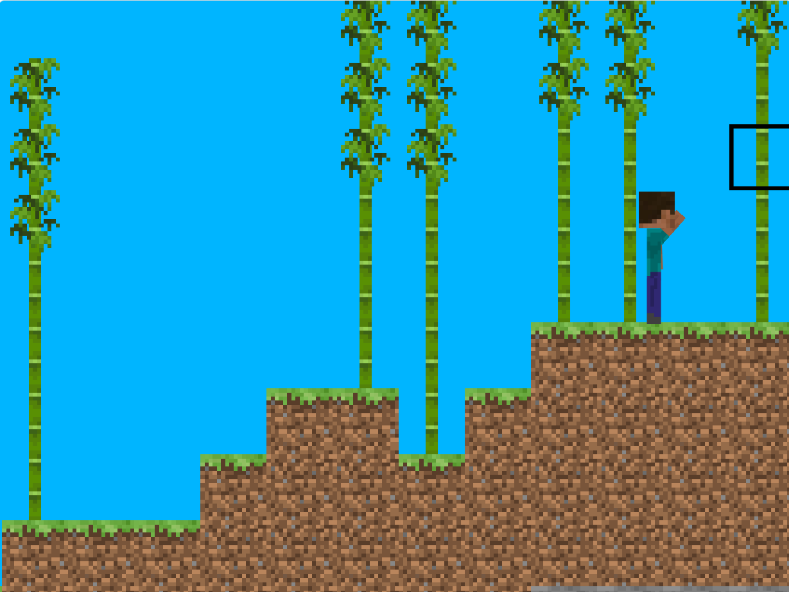

Version 24w20a Changelog
This version introduces several new features, changes, and bug fixes. Please review the details below.

Test the latest version Test it!
Additions
- Chat function accessed through key 't'
- Command Parser
/gamemodecommand with options: spectator, creative, survival, adventure/logincommand to change default username/killcommand to send player back to world spawn- Spectator Mode accessed through
/gamemode spectator - Debug slider to change block breaking speed
- Function to add ocean decoration
- New way of calculating distance from player to player hand
- Textures: Azure Bluet, Pink Tulip, Pink Petals
- Block Tags for flower forest flowers and meadow flowers
- Ability to place blocks with right click
Changes
- Adjusted render distance to 480
- Player respawns at (0,y) and vertical y movement smoothed
- Changed collision check order to prevent down spamming for vertical motion
- Improved world generation with Perlin noise and block metadata states
- Refactored code for cleaner scripts
- Reduced number of possible worlds to prevent issues with the new generator
Bugs Fixed
- Players respawn position changes to the new min x
- Player can break blocks far away in spectator mode
- Flower forest doesn't generate all flowers
- Cherry Grove generates flowers instead of Pink Petals
- Mangrove Swamp/Normal Swamp has incorrect water height
Compatibility Note
Please note that this version may make it impossible to upload to Scratch due to compatibility issues with certain extensions.